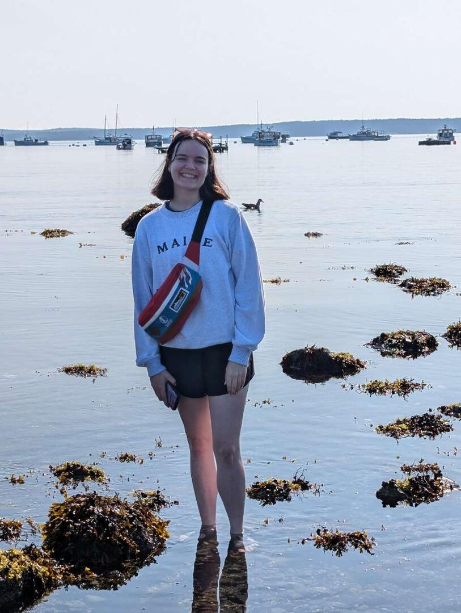
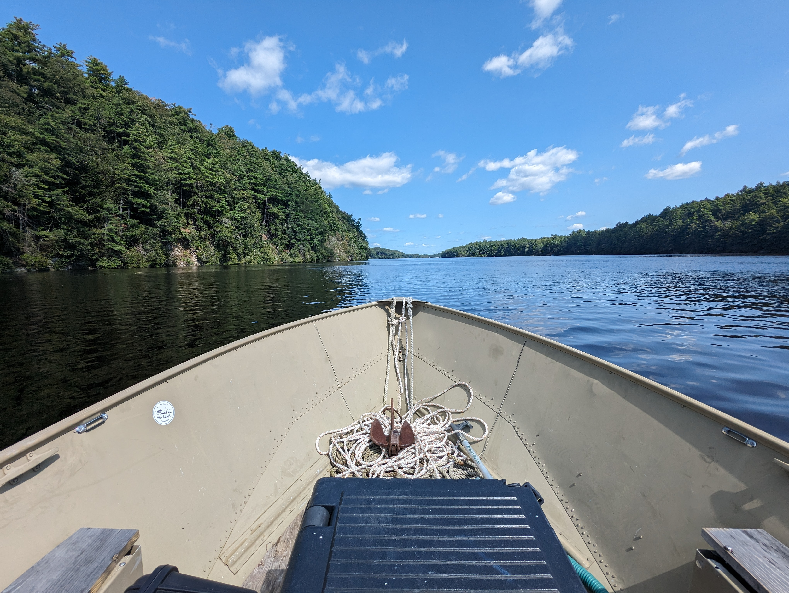
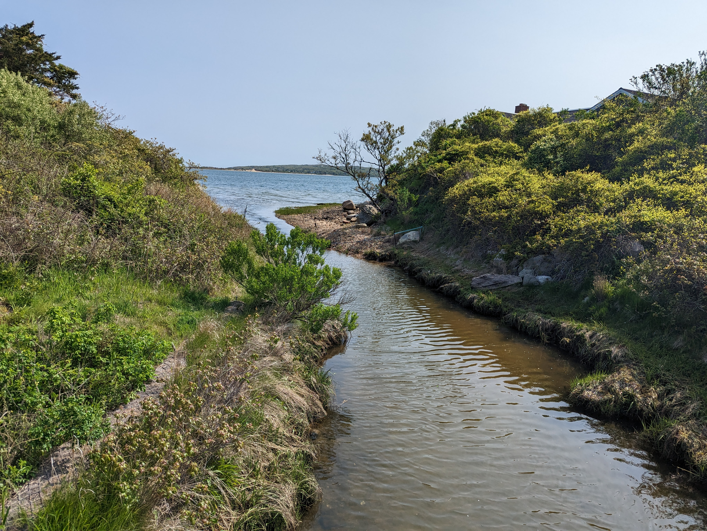

Vanessa Quintana
Applied Ecological Modeler • Coastal Systems Scientist • Geospatial Analyst

Marine Sciences, University of Maine
ORISE Fellow, U.S. Army Corps of Engineers
Estuarine Hydrodynamics and Sediment Transport
Agent-Based and Ecological Modeling
About My Work
I work at the intersection of hydrodynamics, sediment and contaminant transport, and fish behavior. My research focuses on how exposure actually emerges in real estuarine systems, not just where contamination exists on a map.
I approach modeling as a way to make processes visible. Instead of treating risk as static, I build frameworks that show how movement, interaction, habitat, and environmental variability combine to shape outcomes over time. My goal is to create tools that are transparent, reproducible, and genuinely useful for management and restoration.
Research Areas

Hydrodynamics
Flow regimes, tidal asymmetry, river discharge, and sediment transport as drivers of material movement through estuarine systems.

Agent-Based Modeling
Behavior, migration, schooling, and trophic interactions as mechanisms that transform potential exposure into realized risk.

Habitat Modeling
Life-stage-specific habitat suitability frameworks linking environmental gradients with when and where fish can persist.

Co-Development
Collaborative model building with Tribal partners, agencies, and communities to improve transparency, relevance, and use.
Featured Tools
Alongside publications and reports, I build public-facing tools and modeling products that support interpretation, communication, and applied decision-making.
Mercury Risk Explorer
Interactive application visualizing how hydrodynamics, habitat, and fish behavior structure mercury exposure risk in estuaries.
GoFish Toolkit
Behavioral modeling toolkit for migratory fish with functions for movement, energetics, exposure, and ecological interaction.
HyporheicFloPy
Automated groundwater and hyporheic modeling workflow built to support restoration and aquatic systems analysis.
River Herring Habitat Model
Transparent habitat suitability framework for alewife and blueback herring across life stages and changing estuarine conditions.